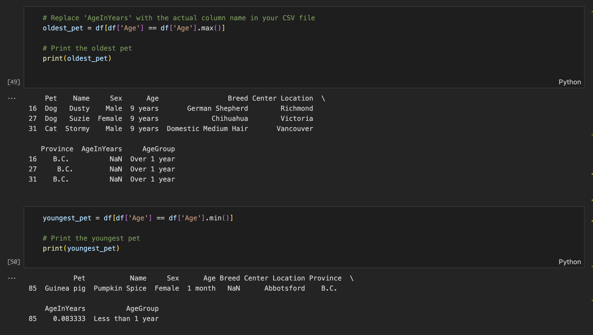
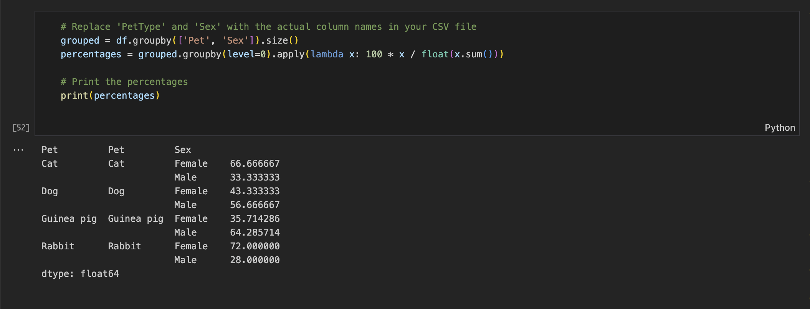
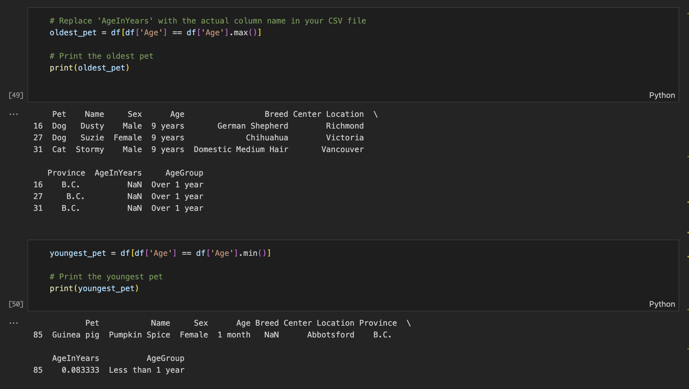
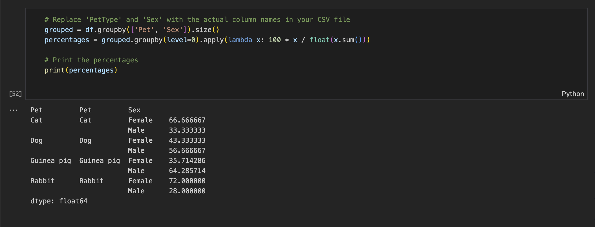

Data Source: https://adopt.spca.bc.ca (July - Oct 2023)
Tools: Octoparse (web data scraper).
Application: Python, PySpark.
Motivation for BC SPCA Pet Data Analysis:
My decision to analyze data pertaining to 'adoptable animals' at the BC SPCA from July to September 2023 was motivated by a profound concern for the welfare of animals in our community. This initiative stemmed from a growing awareness of the escalating issue of pet abandonment, particularly exacerbated by the challenges posed by the COVID-19 outbreak and the housing crisis in British Columbia. The urgency of this matter became apparent to me through various news reports and articles, highlighting the increasing numbers of pets being relinquished due to restrictions imposed by landlords and the economic strain faced by many individuals and families.
Shedding light on the escalating crisis facing animal shelters in the Lower Mainland. A report by the Vancouver Sun highlighted the dire situation, noting that lower mainland animal shelters are at a crisis level due to people being unable to afford their pets, particularly amidst the challenges posed by the COVID-19 pandemic and housing instability (source: Vancouver Sun). Furthermore, a news piece from the Castlegar News emphasized the severity of the issue, revealing that the BC SPCA took in 1000 more animals in 2022 than the previous year, underscoring the urgent need for intervention and support for vulnerable animals (source: Castlegar News). These articles underscored the importance of addressing pet abandonment and welfare concerns, further motivating me to explore the available data and contribute to meaningful solutions.
This troubling reality prompted me to delve deeper into the available data provided by the BC SPCA, with the aim of gaining insights that could potentially inform strategies for mitigating the impact of this issue and improving the outcomes for vulnerable animals in our community.
In fact, I utilized the Octoparse web scraper app to gather data on adoptable dogs, cats, rabbits, and guinea pigs, as these are the majority of animals available for adoption. A total of 99 animals out of approx. 330 in total, randomly selected within each category, were collected from the Lower Mainland of the Greater Vancouver area.
However, this analysis was merely a starting point fueled by my curiosity learning data analysis. Through this trial analysis, I came to realize the profound impact that data analysis can have in understanding complex societal issues. Data tells a lots of facts. It became evident to me that data holds the key to better understanding the situation and predicting and preparing for future trends. This realization further underscores the importance of leveraging data-driven approaches in addressing social challenges and driving positive change. Through continued analysis and application of insights gleaned from data from now, we all need to be committed to meaningful solutions that benefit both animals and our community as a whole.
BC SPCA Adoptable Animal LIst CSV. File:
created with
Best Free Website Builder . 


